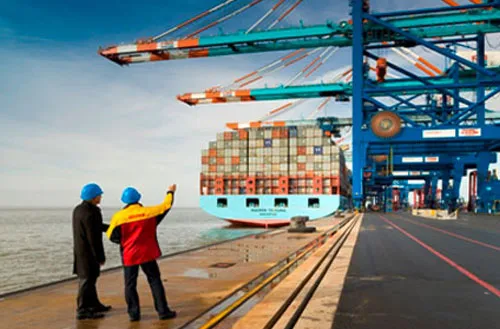
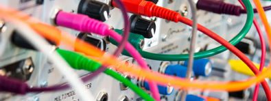

World Trade Organization, part of the South Asian Free Trade Area agreement and the China–Pakistan Free Trade Agreement.
Fluctuating world demand for its exports, domestic political uncertainty, and the impact of occasional droughts on its agricultural
production have all contributed to variability in Pakistan's trade deficit. The trade deficit for the fiscal year 2013/14 is $7.743 billion,
exports are $10.367 billion in July–November 2013 and imports are $18.110 billion
Pakistan's exports continue to be dominated by men power export in the subcontinent,cotton textiles and apparel. Imports include
petroleum and petroleum products, chemicals, fertilizer, capital goods, industrial raw materials, and consumer products.
On 12 December 2013, the European Union granted GSP Plus status to Pakistan until 2017, which enabled it to export 20% of its good
with 0 tariff and 70 percent at preferential rates to the EU market. This status was given after the European Parliament passed the
resolution by 406-186 votes.
Export Of Pakistan

Pakistan's exports for the year 2015-2016 stood at US$21 Billion and imports were at US$44.76 billion for the same period.
Pakistan's exports increased more than 100% from $7.5 billion in 1999 to stand at $18 billion in the financial year 2007–2008.
Pakistan exports rice, kinnows, mangoes, furniture, cotton fiber, cement, tiles, marble, textiles, clothing, leather goods, veterinary
surgical supplies, sports goods (renowned for footballs/soccer balls), cutlery, surgical instruments, electrical appliances, software,
carpets, rugs, ice cream, livestock meat, chicken, powdered milk, wheat, seafood (especially shrimp/prawns), vegetables, processed
food items, Pakistani-assembled Suzukis (to Afghanistan and other countries), defense equipment (submarines, tanks, radars), salt,
onyx, engineering goods, and many other items. Pakistan produces and exports cements to Asia and the Middle East. In August
2007, Pakistan started exporting cement to India to fill in the shortage there caused by the building boom. Russia is a growing
market for Pakistani exporters. In 2009/2010 the export target of Pakistan was US$20 billion.[8] As of April 2015, Pakistan's exports
stand at US$29 billion.
- Mangoes:A famous export that is popular in the Middle East and Europe
- Onions: A famous export that is popular in the Middle East and Europe
- Corn: A major export
Major Export
.jpg)
.jpg)
.jpg)
Import Of Pakistan
($1.66B), and Scrap Iron ($1.43B), importing mostly from China ($14.7B), United Arab Emirates ($5.93B), United States ($2.59B), Saudi
Arabia ($2.23B), and Indonesia ($2.08B).
In 2019, Pakistan was the world's biggest importer of Tea ($601M), Metallic Yarn ($48.6M).
Location: Pakistan borders Afghanistan, China, India, and Iran by land and Oman by sea.
- Petroleum products:
Refined petroleum, petroleum gas, and crude oil Petroleum is a broad term
encompassing a complex mixture of hydrocarbons and other elements, serving
as the source for various fuels. Petrol, or gasoline, is a specific, volatile
derivative of petroleum used mainly in internal combustion engines. - Electrical and electronic items:
 Electrical devices, like heaters and motors, are
employed for tasks requiring basic energy conversion.
Electronic devices, such as computers and smartphones,
are used for information processing, communication, and
automation in daily life. - China:The largest import partner, with a market share of 29%
- United Arab Emirates:The second largest import partner, with a market share of 10%
- Saudi Arabia: A major import partner